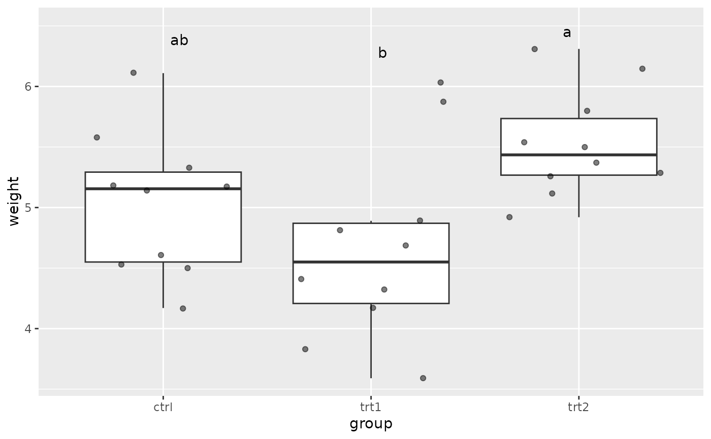
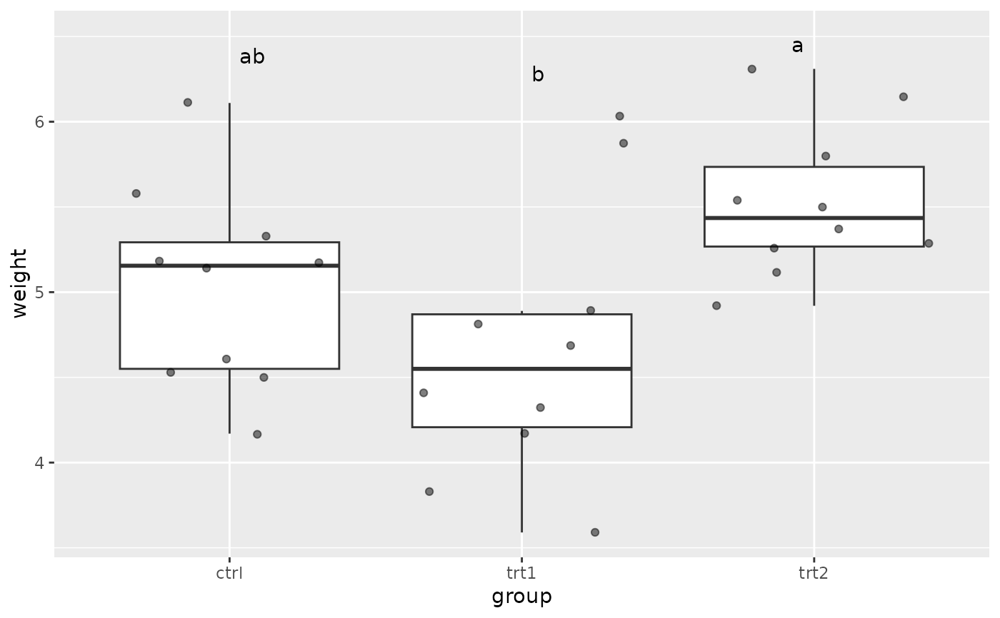

Plot a boxplot and add group to it
gg_boxplot_with_group.RdSee also: https://www.ncbi.nlm.nih.gov/pmc/articles/PMC6193594/
Examples
data("PlantGrowth")
gg_boxplot_with_group(PlantGrowth, "group", "weight")

gg_boxplot_with_group.RdSee also: https://www.ncbi.nlm.nih.gov/pmc/articles/PMC6193594/
data("PlantGrowth")
gg_boxplot_with_group(PlantGrowth, "group", "weight")
